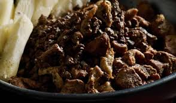
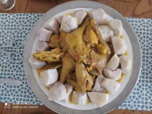
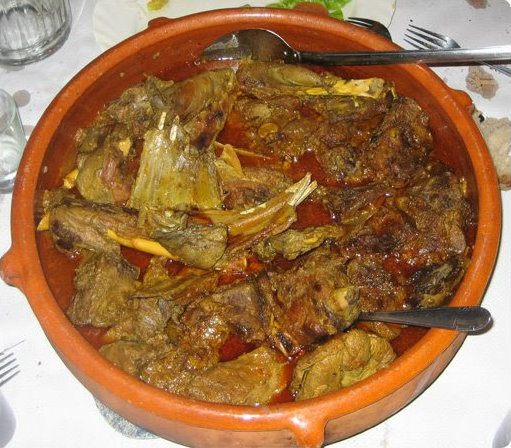

Lugares turisticos
Comida tipica
- Friche
- Malanga
- Iguana Guisada con Coco
Plato tradicional wayuu que consiste en una mezcla de vísceras de chivo. Se cocina y luego se fríe en aceite
Guiso de gallina criolla con trozos de malanga cocida.
La iguana guisada con coco es un plato típico en algunas regiones de la costa Caribe y zonas rurales de Colombia y Venezuela. Se elabora con carne de iguana, un ingrediente tradicional en la gastronomía de comunidades rurales donde se consume por su sabor y alto contenido de proteínas.
Sector economico
El sector económico de La Guajira se basa en la minería, el turismo, la ganadería, la pesca y el comercio.
- Minería: La actividad más importante, con la explotación de carbón en la mina de El Cerrejón, una de las más grandes del mundo. También hay extracción de sal en Manaure.
- Turismo: Destinos como Cabo de la Vela, Punta Gallinas y las rancherías wayuu atraen visitantes por su belleza natural y cultura indígena.
- Ganadería y agricultura: Se cría ganado caprino y bovino, y se cultivan productos como maíz, frijol y plátano, aunque las condiciones áridas limitan la producción.
- Pesca: Actividad clave en comunidades costeras, con especies como la sierra y el pargo.
- Comercio y economía informal: Se comercializan productos con Venezuela y hay un fuerte mercado de artesanías wayuu.
Su economía es limitada por el difícil acceso y la falta de infraestructura, pero con alto potencial en ecoturismo y biodiversidad.